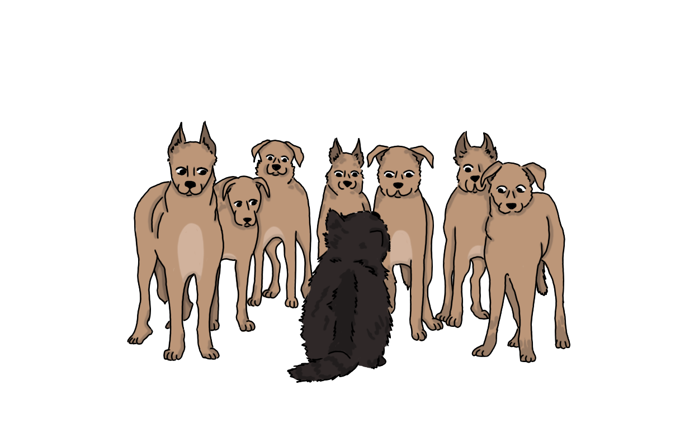

Глава II
Билингвизм
После целого дня, проведенного за пределами родной подушки, котенок сразу погрузился в сон. Мама-кошка долго-долго вылизывала его, смывая остатки речной воды и чужие запахи, пока котенку снились кусты, которые не кусаются, бесконечное синее небо и вкусное молоко.
Проснулся он от того, что мамы снова не было рядом. Приятные картинки, которые появлялись, когда он надолго закрывал глаза, напоминали ему о прошедшем дне. Подушка была тёплой и знакомой, но котенок знал, что за ней есть интересный мир, который ему хочется узнать. Котенку снова хотелось увидеть бесконечный синий потолок с белым пухом, подобным тому, который иногда торчал из его родной подушки, побегать по зеленому шерстяному полу и увидеть себя в речке искаженным от движения воды, которой его отмывали от грязи.
Котёнок спрыгнул с подушки. Лапки мягко стукнули по деревянному полу. Дверь, как и в прошлый раз, была приоткрыта, так что он смог протиснуться в щель и оказаться снаружи.
И снова его охватило то же чувство восхищения. Под ногами был рыхлый коричневый пол, который мама-кошка назвала "земля", и из него торчали зелёные ленточки — "трава", а наверху, бесконечно далеко, раскинулся синий потолок — "небо". Котёнок долго смотрел по сторонам, чувствуя себя еще увереннее, чем в прошлый раз, а затем решил прогуляться. Теперь он не бежал в страхе, испугавшись кустов, а шёл, важно переставляя лапки и всё обнюхивая. Он дошел до знакомого прохода в деревянной стене и вышел, заметив знакомую тропинку. По обе стороны от нее, котенок увидел траву, отличающуюся от той, что щекотала его лапки. Эта трава была больше, и у нее на кончике был шар из пуха, который тоже качался из-за ветра. Котенок коснулся этого шарика, и он начал распадаться, разлетаясь в стороны. Котенку так это понравилось, что он сошел с тропинки и начал бегать по этой высокой траве, пока пух кружил вокруг него.
Неожиданно вместо веселого пуха, перед ним показалась знакомая речка, куда его привели другие котята, но у самой воды он увидел нечто новое: шевелящуюся кучку из коричневого меха. Несколько зверей, примерно одного с ним размера, но совсем другой формы: у них были длинные мордочки, висячие уши и смешные короткие хвостики, которые быстро-быстро мотались из стороны в сторону. Котёнок никогда таких не видел, поэтому замер и стал наблюдать. Они тыкались носами в землю, фыркали и смешно подпрыгивали друг на друга.
Котёнок решил подойти поближе, чтобы рассмотреть их, но один из коричневых зверей заметил его. Он замер, его хвостик перестал мотаться и встал торчком. Глаза его округлились. А потом он издал громкий, резкий, пронзительный звук, совсем не похожий на то, как с ним разговаривают другие котята.
Котёнок испугался. Остальные тут же повернулись к нему и тоже начали издавать такие звуки. Они все вдруг сорвались с места и понеслись к нему. Котёнок хотел нырнуть обратно в кусты, но не успел. Эти коричневые создания двигались очень быстро и резко, окружая его со всех сторон. Котёнок прижал уши, выгнул спинку и зашипел, как учила мама, но это не помогало. Громкие звуки пугали его, и котенок хотел вернуться обратно — на свою родную, безопасную подушку. Он попятился назад, к воде, но путь был закрыт.

Вдруг из-за кустов, оттуда, откуда сам котенок только что вышел, раздался ещё один звук: не мяуканье и не звуки, которые издавали коричневые звери. Они обернулись. Из кустов выскочил ещё один котёнок. Он тоже был коричневый, почти как эти пугающие создания. Двигался он не так, как другие котята: не плавно и осторожно, а быстро и резко. Он подбежал к стае и снова издал тот же звук, который заставил зверей затихнуть. Они замахали хвостиками, заскулили, посмотрели на коричневого котёнка, а потом развернулись и ушли дальше по берегу речки.
Котёнок всё ещё сидел, вжавшись в землю, и боялся пошевелиться. Коричневый котенок подошёл к нему:
— Ты чего? — спросил он. Голос у него был необычный, громкий и отрывистый. Черный котенок испуганно молчал, — Они просто испугались. Ты для них чужой, ведь ты кот.
"Он ведь тоже кот. Почему он их понимает?" — размышлял котенок.
— Не бойся, я вырос с собаками и знаю, что они тебе не навредят, — коричневый котёнок сел и почесал задней лапой за ухом. Это движение вышло у него как-то особенно быстро и дёргано. — Это моя стая. Я их понимаю, и они понимают меня.
Чёрный котёнок удивлённо посмотрел на него:
"Собаки? Котенок может понимать не только котов, но и других зверей?"
Коричневый котенок увидел удивление в его глазах, поэтому продолжил, виляя хвостом:
— Я рос среди них. Я привык жить, как они. И голос у меня от них. Я даже думаю иногда, как они, хотя я кот.
Котенок поднялся на лапки и посмотрел в сторону, куда ушла стая коричневых комков. Страх ушёл, и теперь мир стал намного интереснее. Он сегодня узнал много нового. Оказалось, что кроме котов существуют еще другие существа, и их тоже можно понимать. Ему вдруг стало интересно, существует ли кто-то, кроме котов и собак?
— Ты можешь их больше не бояться, они теперь тебя знают, — коричневый котенок вдруг издал тот же звук, посмотрел на черного котенка последний раз и убежал к своей стае, скрывшись так же быстро и резко, как и появился. А котёнок ещё долго сидел у речки, смотрел на отражение неба в реке и думал. Мир снова стал для него большим и интересным, и ему хотелось его исследовать, выйти за пределы речки и увидеть, что же находится там, вдали от нее, но пришла пора возвращаться на свою родную подушку, чтобы мама-кошка не начала его искать.
В этой главе наш котёнок встретился с необычным персонажем: котёнком, выросшим среди собак. Так как своё детство он провёл среди двух разных обществ и культур, то и обладает он двумя языками (в нашем случае кошачьим и собачьим). Такое явление — знание человеком двух языков — называют билингвизмом.
Однако не только это выделяет его от других котят. Он и ведёт себя, и мыслит по-иному. Усвоив в детстве два языка, он усвоил и две языковые картины мира, которые сопряжены с соответствующими национальными картинами мира. Тем самым он приобщился к двум культурам.
Также билингвизм котёнка выражается в том, что когда он переходит от общения на одном языке, к общению на другом, то в некоторой степени само его мышление меняется.